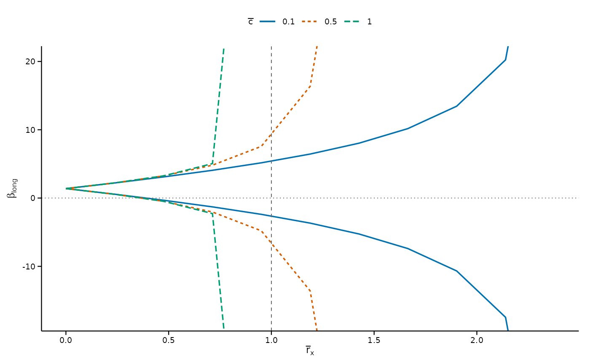

Produces a ggplot object visualizing either an identified-set sweep (from
regsen_bounds()) or a breakdown frontier (from regsen_breakdown()).
Usage
# S3 method for class 'regsensitivity'
plot(
x,
ywidth = NULL,
ylim = NULL,
show_breakdown = TRUE,
show_legend = TRUE,
xline = NULL,
xline_colour = "grey40",
xline_linetype = "dashed",
xline_linewidth = 0.35,
title = NULL,
subtitle = NULL,
xtitle = NULL,
ytitle = NULL,
base_size = 11,
...
)Arguments
- x
A
regsensitivityobject.- ywidth
Half-width of the y-axis in standard deviations of X. Ignored when
ylimis set.- ylim
Optional two-element numeric vector giving the y-axis limits.
- show_breakdown
Logical; draw a horizontal line at the hypothesis value. Defaults to
TRUE.- show_legend
Logical; show the legend (only relevant when plotting bounds with multiple values of a second sensitivity parameter).
- xline
Optional numeric vector of x-axis positions at which to draw reference lines, the equivalent of Stata's
xline(). Useful for marking a value ofrmax, a breakdown point, or any other threshold being discussed in the text.- xline_colour, xline_linetype, xline_linewidth
Appearance of the
xlinereference lines.- title, subtitle, xtitle, ytitle
Plot annotations.
NULLuses defaults;NAdrops the annotation entirely, which is usually what you want for a figure whose caption already carries the description.- base_size
Base font size passed to
theme_regsen(). Use9for a two-column journal figure rendered about 3.3 inches wide.- ...
Ignored.
Value
A ggplot object. Because it is an ordinary ggplot, every default
here can be overridden by adding scales, themes or annotations to it.
Examples
# \donttest{
data(bfg2020)
res <- regsen_bounds(
avgrep2000to2016 ~ tye_tfe890_500kNI_100_l6 + log_area_2010 + lat + lon,
data = bfg2020, compare = c("log_area_2010", "lat", "lon"),
cbar = c(0.1, 0.5, 1)
)
plot(res, xline = 1, base_size = 9)

# }